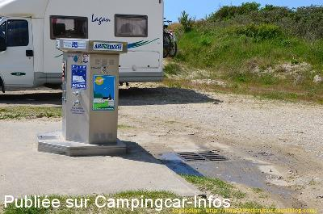
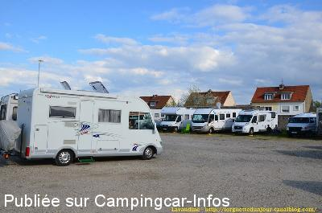
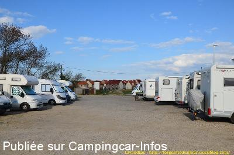
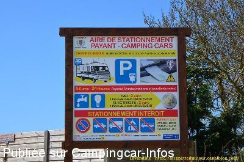
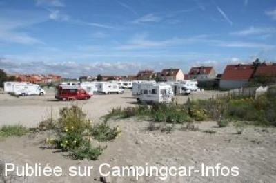
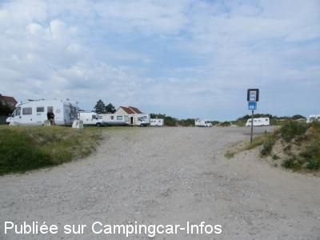

ASN = Aire de services avec stationnement nuit possible de :
LE CROTOY
(N° 383)
Accès/adresse :
Rue du Marais
80550 LE CROTOY
80550 LE CROTOY
Latitude : (Nord) 50.22866° Décimaux ou 50° 13′ 43′′
Longitude : (Est) 1.61265° Décimaux ou 1° 36′ 45′′
Tarif : 2015
Stationnement : 6 €
Eau et 55 minutes d'électricité : 2 €
Ne pas oublier de prendre un ticket, sous peine d'amende
Type de borne : AIRESERVICES
Services :


Commerces
Autres informations :
Ouvert toute l'année
Borne équipée antigel

Le 25/11/2013 par camper67

Le 25/11/2013 par camper67

Le 25/11/2013 par camper67

Le 25/11/2013 par camper67

Le 22/08/2011 par sybrub

Le 25/07/2009 par vinatier.dominique
de
Bernard Housiaux
le 24/08/2015 :
Comme sur les autres Aires autour du Crotoy. Rendu très sale par des Campincaristes irrespectueux qui jettent leurs Poubelles un peu partout et ne ramassent même pas les Crottes de leurs chiens. Que ceux-ci ne s'étonnent pas que nous serions bientôt malvenus et interdits dans la plupart des aires autour du Crotoy. Espérons que cette Aire sera préservé par ces Cochons…
Comme sur les autres Aires autour du Crotoy. Rendu très sale par des Campincaristes irrespectueux qui jettent leurs Poubelles un peu partout et ne ramassent même pas les Crottes de leurs chiens. Que ceux-ci ne s'étonnent pas que nous serions bientôt malvenus et interdits dans la plupart des aires autour du Crotoy. Espérons que cette Aire sera préservé par ces Cochons…
de
Guémiche
le 18/07/2015 :
Avons passé une nuit sur cette aire un peu éloignée de la ville. Elle s'apparente à un terrain non stabilisé sans délimitations,pour lequel il faut régler 6€ en monnaie car l'horodateur n'accepte pas la carte bancaire. Elle a cependant le mérite d'être calme malgré la proximité d'une route et d'un rond-point.
Avons passé une nuit sur cette aire un peu éloignée de la ville. Elle s'apparente à un terrain non stabilisé sans délimitations,pour lequel il faut régler 6€ en monnaie car l'horodateur n'accepte pas la carte bancaire. Elle a cependant le mérite d'être calme malgré la proximité d'une route et d'un rond-point.
de
Ralph
le 12/11/2014 :
Cette aire est à proximité de la plage, mais pas la ville.
This aire is near to the beach but not the town.
Cette aire est à proximité de la plage, mais pas la ville.
This aire is near to the beach but not the town.
de
jiji02
le 21/09/2014 :
Peu de places, caillouteux, en pente, inégal, suis reparti aussitôt
Peu de places, caillouteux, en pente, inégal, suis reparti aussitôt
de
Petitru17
le 28/04/2014 :
L'horodateur ne fonctionnant qu'avec des pièces prendre la précaution de se munir de monnaie. plusieurs camping-caristes se trouve dans l'impossibilité de prendre un ticket faute de pièces.Perso je viens d'en dépanner un.
L'horodateur ne fonctionnant qu'avec des pièces prendre la précaution de se munir de monnaie. plusieurs camping-caristes se trouve dans l'impossibilité de prendre un ticket faute de pièces.Perso je viens d'en dépanner un.
de
Pierre
le 22/04/2014 :
§
Aire pas mal située et beaucoup plus calme que celle située près du port.
5.00€ + 2.00€ pour les services.
Environ 10 minutes à vélo du centre du Crotoy
§
Aire pas mal située et beaucoup plus calme que celle située près du port.
5.00€ + 2.00€ pour les services.
Environ 10 minutes à vélo du centre du Crotoy
de
Fucik Jean Claude
le 16/10/2013 :
De passage le 9/10/13, aire correcte, 5.00€ parking + 2.00€ les services, sol inégal et des flaques d'eau quand il pleut, mais si la municipalité pourrait faire un effort pour le sol, que dire des ********* de camping-caristes qui font déféquer leurs clebs et pas des petits, au vu du résultat, derrière nos emplacements. Absolument infect..!
De passage le 9/10/13, aire correcte, 5.00€ parking + 2.00€ les services, sol inégal et des flaques d'eau quand il pleut, mais si la municipalité pourrait faire un effort pour le sol, que dire des ********* de camping-caristes qui font déféquer leurs clebs et pas des petits, au vu du résultat, derrière nos emplacements. Absolument infect..!
de
yan 88
le 22/07/2013 :
de passage le 19 07 stationnement sans probleme mais la borne est hs depuis un certain temps au dire de personnes sur le site depuis plusieurs jours attention de ne pas stationner en dehors des 2 aires au risque de prendre un pv la milice locale enfin police municipale nous a purement et simplement viree malgre que j avais paye mon stationnement pour aller faire mes emplettes sur le marche je pense que notre argent n interesse pas monsieur le maire
de passage le 19 07 stationnement sans probleme mais la borne est hs depuis un certain temps au dire de personnes sur le site depuis plusieurs jours attention de ne pas stationner en dehors des 2 aires au risque de prendre un pv la milice locale enfin police municipale nous a purement et simplement viree malgre que j avais paye mon stationnement pour aller faire mes emplettes sur le marche je pense que notre argent n interesse pas monsieur le maire
de
HARNOIS Gilles et Marie Claire
le 11/07/2013 :
De passage fin juin 2013, pas trop de monde. Cette aire est payante mais proche du centre ville. Dommage que la pêche à pied était interdite et le soleil en vacances.
De passage fin juin 2013, pas trop de monde. Cette aire est payante mais proche du centre ville. Dommage que la pêche à pied était interdite et le soleil en vacances.
de
jlch 57
le 14/05/2012 :
§
De passage le 8 et 9 mai,un peu de monde pour le weaken mais par la suite vide.Il est vrai qu'il pleuvait,mais les coques toujours au rendez vous.
Stationnement 5€ agréable car juste derrière la plage.
§
De passage le 8 et 9 mai,un peu de monde pour le weaken mais par la suite vide.Il est vrai qu'il pleuvait,mais les coques toujours au rendez vous.
Stationnement 5€ agréable car juste derrière la plage.
de
niger61
le 03/12/2011 :
De passage les 21 et 22 Novembre 2011, a cette époque pas de problème de stationnement les 10 Camping caristes étaient biens et pour cinq Euros le site est agréable avec des ballades possibles .Les responsables mettent un avertissement mais pas de PV de suite.Nous retourneront a cette aire .
De passage les 21 et 22 Novembre 2011, a cette époque pas de problème de stationnement les 10 Camping caristes étaient biens et pour cinq Euros le site est agréable avec des ballades possibles .Les responsables mettent un avertissement mais pas de PV de suite.Nous retourneront a cette aire .
de
nounours 41
le 06/10/2011 :
Aire minable dont le seul intérêt est d'être en bordure de mer .ensablé par 2 fois en essayant de me garer , j'ai finalement stationné au milieu du parking !le stationnement est payant 1 € de l'heure de 9h à 12h et de 14h à 19h , soit 8€ la journée ,(très cher à mon avis ) mais gratuit la nuit , de 19h à 9 h le lendemain .ne pas oublier dès 9h le matin de reprendre 1 ticket au parcmètre sinon PV !je ne dit pas merci au maire et ne remettrai pas les pieds dans sa commune !
Aire minable dont le seul intérêt est d'être en bordure de mer .ensablé par 2 fois en essayant de me garer , j'ai finalement stationné au milieu du parking !le stationnement est payant 1 € de l'heure de 9h à 12h et de 14h à 19h , soit 8€ la journée ,(très cher à mon avis ) mais gratuit la nuit , de 19h à 9 h le lendemain .ne pas oublier dès 9h le matin de reprendre 1 ticket au parcmètre sinon PV !je ne dit pas merci au maire et ne remettrai pas les pieds dans sa commune !
de
Camilleb61
le 03/02/2010 :
De passage en novembre, je suis allé jeter un œil, je n'y ai vu que 5 CC. Aire en effet dans les dunes et à 50m de la plage, un peu en dehors de la ville mais facilement accessible en vélo (tout est plat) et très calme les week-ends.
A gauche, un long mur décrépi et juste en face un futur entrepôt / usine en construction. Ne pas oublier d'utiliser les immenses poubelles
De passage en novembre, je suis allé jeter un œil, je n'y ai vu que 5 CC. Aire en effet dans les dunes et à 50m de la plage, un peu en dehors de la ville mais facilement accessible en vélo (tout est plat) et très calme les week-ends.
A gauche, un long mur décrépi et juste en face un futur entrepôt / usine en construction. Ne pas oublier d'utiliser les immenses poubelles
de
fredo62
le 16/04/2008 :
L'aire est très spacieuse et très proche du petit port, accès facile. Tarif 5€/24h. Idéal pour balades à pied et à vélo. Profitez-en aussi pour une balade en train à vapeur qui parcourt toute la baie de Somme.
L'aire est très spacieuse et très proche du petit port, accès facile. Tarif 5€/24h. Idéal pour balades à pied et à vélo. Profitez-en aussi pour une balade en train à vapeur qui parcourt toute la baie de Somme.